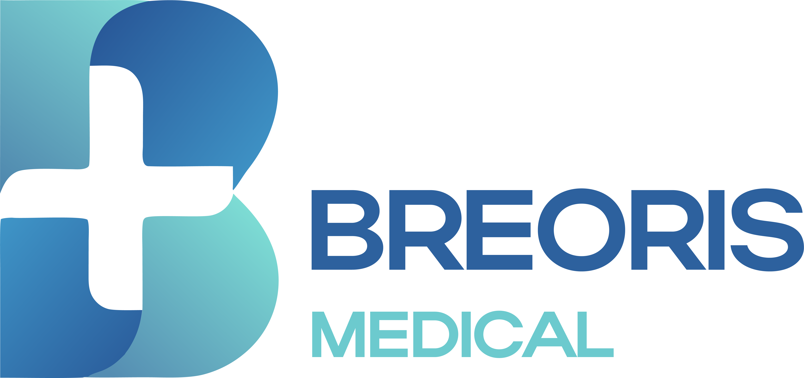
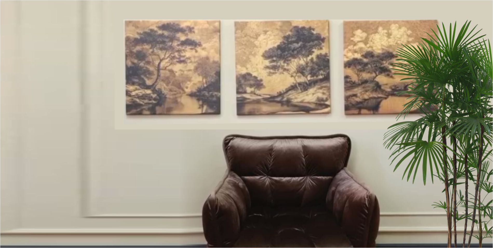
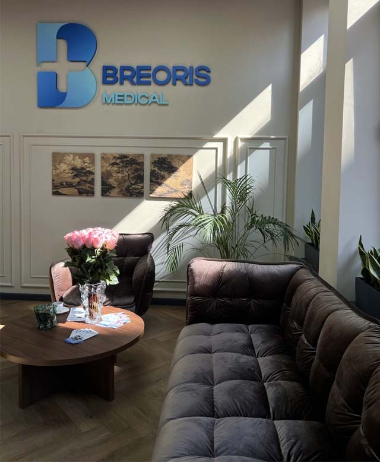
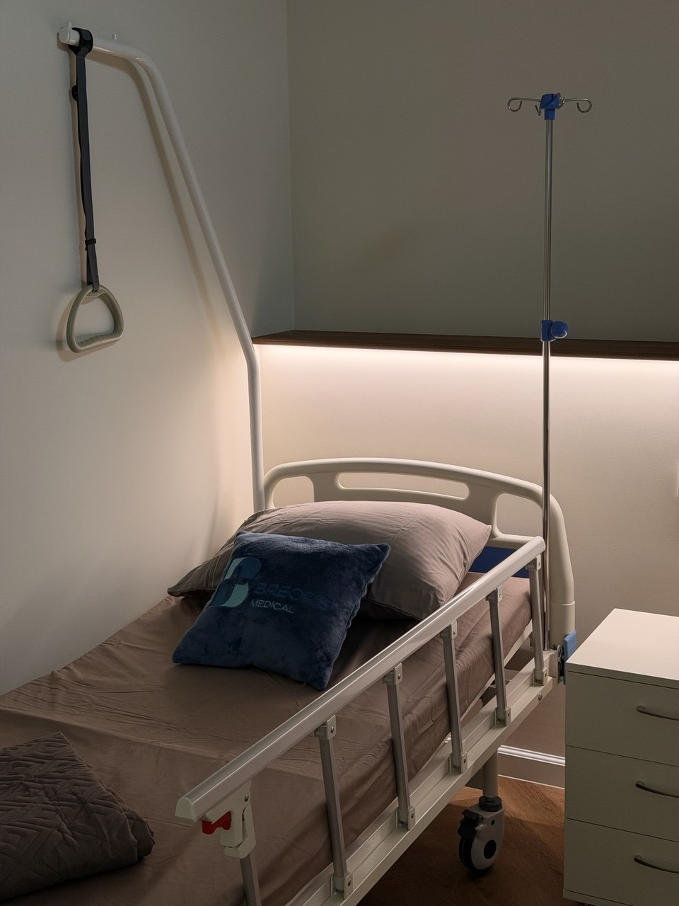
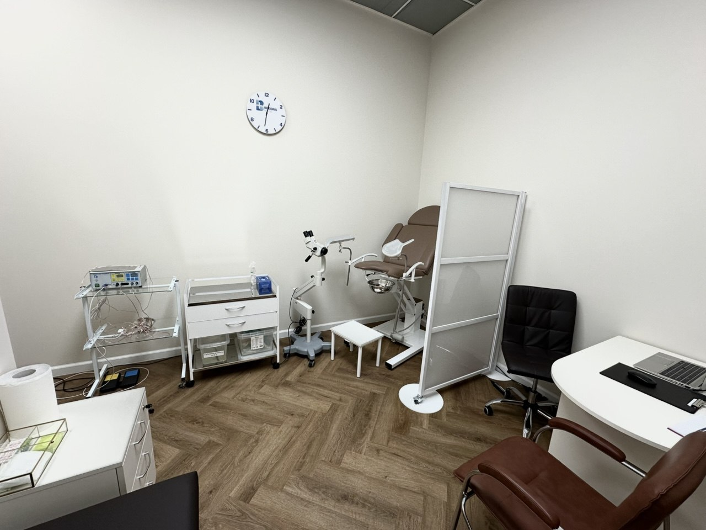
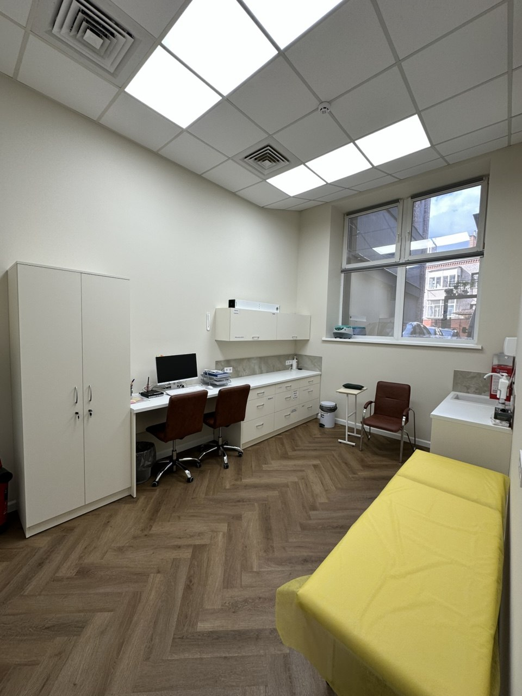
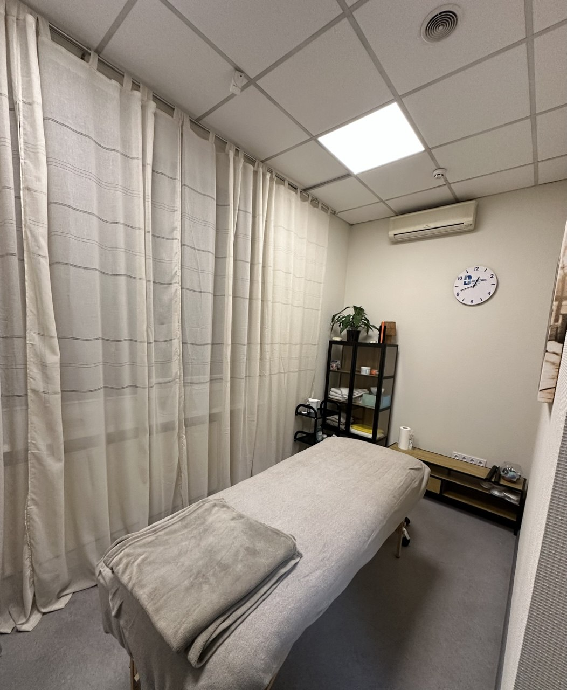
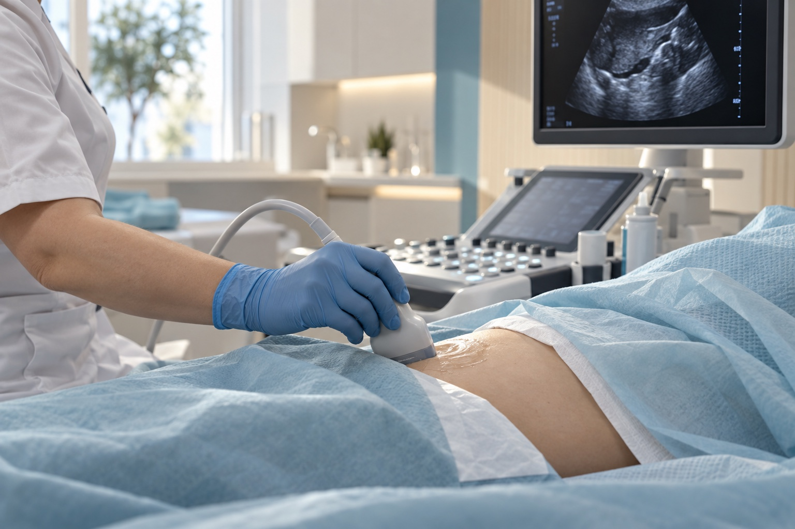
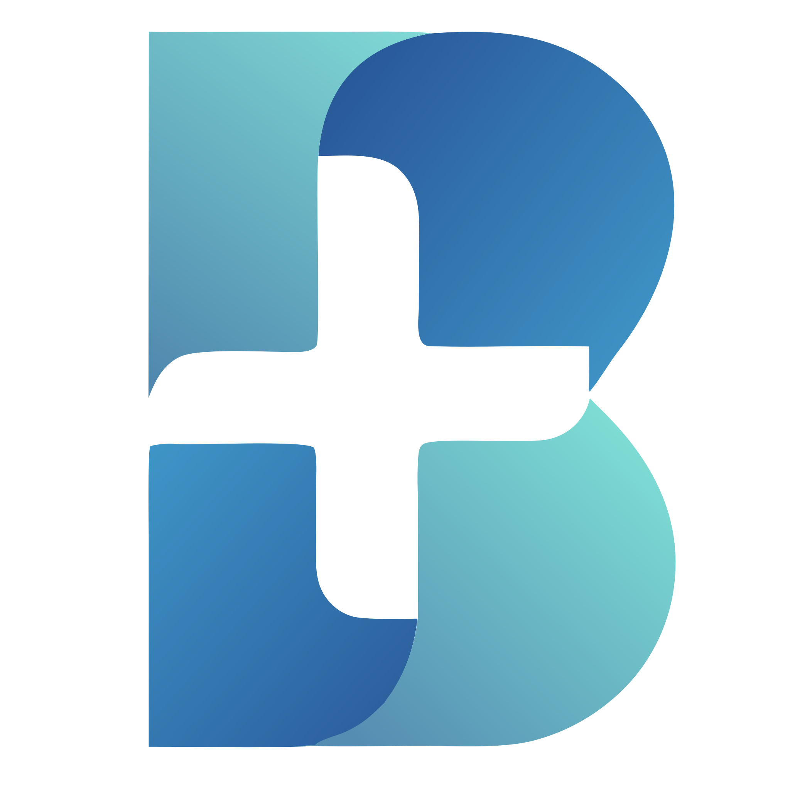

Знайомство з лікарем
Оберіть спеціаліста та перегляньте його профіль до запису.

Оберіть напрям, дізнайтеся про прийом та знайдіть свого лікаря.
Пошук допомагає знайти напрям. Обрати лікаря також допоможе адміністратор.
Спробуйте іншу назву або зверніться до адміністратора — допоможемо зорієнтуватися.
ЗателефонуватиЦіни орієнтовні. Склад послуги та остаточну суму уточніть до візиту.
Наші лікарі
Консультації лікарів, УЗД та аналізи у Дніпрі. Пояснимо результати та наступні кроки.

Оберіть спеціаліста та перегляньте його профіль до запису.
Показуємо орієнтовну суму за обрану послугу ще до приїзду.
Пояснюємо, як узгодити час прийому і куди звернутися з питаннями.
Breoris Medical — сучасний багатопрофільний медичний центр у Дніпрі, де поєднуються доказова медицина, комплексний підхід до діагностики та уважне ставлення до кожного пацієнта.
Познайомитися з лікарями
Справжній простір Breoris MedicalУ клініці працюють лікарі різних напрямів. Оберіть спеціаліста за своїм запитом або попросіть адміністратора допомогти з вибором.
УЗД, функціональна діагностика, ЕЕГ, аналізи та процедури — потрібне обстеження можна уточнити до візиту.
Окремий напрям роботи клініки — профілактична медицина та комплексні обстеження. Ми проводимо check-up програми, передопераційні, студентські та спортивні обстеження, а також національний скринінг здоров’я 40+. У денному стаціонарі можна пройти інфузійну терапію, необхідні лікувальні та відновлювальні процедури, а також моніторинг стану за призначенням лікаря. Доступні лікувальний і відновлювальний масаж та виїзд медичних спеціалістів додому.
Познайомтеся з простором Breoris Medical до першого візиту.






Про консультації, обстеження та підготовку до візиту.
УЗД — дослідження, яке використовує звукові хвилі для отримання зображень внутрішніх структур. У Breoris Medical зазначені дослідження внутрішніх органів, судин і суглобів. Потрібний вид УЗД уточніть перед записом.
Читати статтю КонсультаціїНеврологія — напрям, пов’язаний із роботою нервової системи. На консультації у Breoris Medical можна обговорити скарги, попередні висновки та питання подальшого спостереження у невролога.
Читати статтю Check-upCheck-up у Breoris Medical — програма обстеження, склад якої узгоджується відповідно до мети звернення. У клініці зазначені передопераційні, студентські та спортивні програми.
Читати статтюВраження людей про Breoris Medical на Google Maps.
Google Maps ·
Нещодавно відвідала клініку й залишилася дуже задоволена! Сучасний інтер’єр, приємна атмосфера та справді уважний персонал.
Адміністратори ввічливі, усе докладно пояснюють і допомагають із будь-якими питаннями. Лікарі — професіонали своєї справи, відчувається турбота про пацієнта та індивідуальний підхід. Окремо хочеться відзначити чистоту, комфорт і високий рівень сервісу. Дуже приємно, коли в клініці можна почуватися спокійно й упевнено. Бажаю клініці процвітання та вдячних пацієнтів!
Чудова клініка, ввічливий і компетентний персонал, зайвого не призначають, завжди привітні, дадуть відповідь на всі запитання.
Зручне розташування. Була вже не один раз у різних спеціалістів і аналізи здавала, дуже рекомендую.
Велика подяка Томах Наталії Валеріївні, невропатологу з величезним досвідом і природним талантом професійно та дуже уважно підійти до кожної проблеми пацієнта.
Понад 20 років спостерігаюся в Наталії Валеріївни й завжди отримую кваліфіковану допомогу та підтримку. Вона завжди дуже уважна, тактовна й доброзичлива, як спеціаліст і як жінка. Дуже рекомендую звертатися по допомогу до нового центру, де є такі чудові спеціалісти, небайдужі до чужого болю, як Наталія Валеріївна.
Побачив, що в медичному центрі проводять національний скринінг 40+, і записався. Усе пройшло на ура!
Аналізи, кардіограма — усе швидко, за 10 хвилин; найдовше проходив опитування й огляд терапевта. Висновок надіслали в Telegram 👍